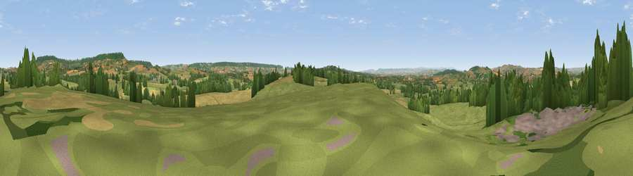

Viewpoint near Higher Tale
#15610 in England · top 23% of its area beats it · near Higher TaleThe view, rendered

A 360° render of this exact spot computed from the terrain model, tree cover and land cover — summer colours, afternoon light, calibrated against photographs of famous viewpoints. Real trees, hedges and buildings will differ in detail.
The panorama
Grey silhouette: terrain skyline in each direction (720 bearings, Earth curvature and refraction included). Dashed green: skyline with trees (+15 m) and buildings (+8 m) as obstacles. Blue strip: how far the ground is visible on each bearing.
Where the view opens
Wedge length = distance to the farthest visible ground on that bearing (vegetation-aware). Rings at 10, 25 and 50 km.
What fills the view
54% grassland · 27% cropland · 17% woodland · 2% built-up
Angular shares of the visible panorama (visual magnitude), not map area. Landscape diversity 0.47 (0–1 Shannon).
Key numbers
More beautiful places nearby
The staircase of upgrades: each row has a higher view potential than everything closer. Driving times are estimates from straight-line distance, calibrated against real road routing — check an actual route before setting out.
| Place | Direction | Drive | Score |
|---|---|---|---|
| Viewpoint near Plymtree | NNW · 2 km | ~5 min | 57.5 |
| Viewpoint near Talaton | S · 3 km | ~8 min | 57.7 |
| Viewpoint near Payhembury | E · 3 km | ~8 min | 60.7 |
| Hembury | ENE · 4 km | ~10 min | 75.9 |
| Viewpoint near Bradninch | WNW · 10 km | ~19 min | 77.7 |
| Viewpoint near Tipton St John | SSE · 11 km | ~21 min | 81.5 |
| Viewpoint near Colaton Raleigh | SSE · 14 km | ~26 min | 82.1 |
| Viewpoint near Sidmouth | SSE · 15 km | ~27 min | 83.0 |
50.80446, -3.31940 · source: screening · position refined by local search. Computed location — check access rights before visiting.